11th NE(O)RDINARY HACKATHON 대회 후기
CMC와 UMC가 함께한 무박 2일 해커톤에서 서버와 AWS 인프라를 맡아 대상을 받기까지의 기록입니다.
UMC 7th Spring Boot로 동아리에서 활동하였고, 전역이 얼마 남지 않은 시기에 마침 공고가 떠 11th NE(O)RDINARY HACKATHON에 신청하게 되었다.
대회에 참여하면서 느낀 것들과 대회 직후 나를 돌아본 기억들을 떠올려 보며 대회 후기를 작성해 보고자 한다.
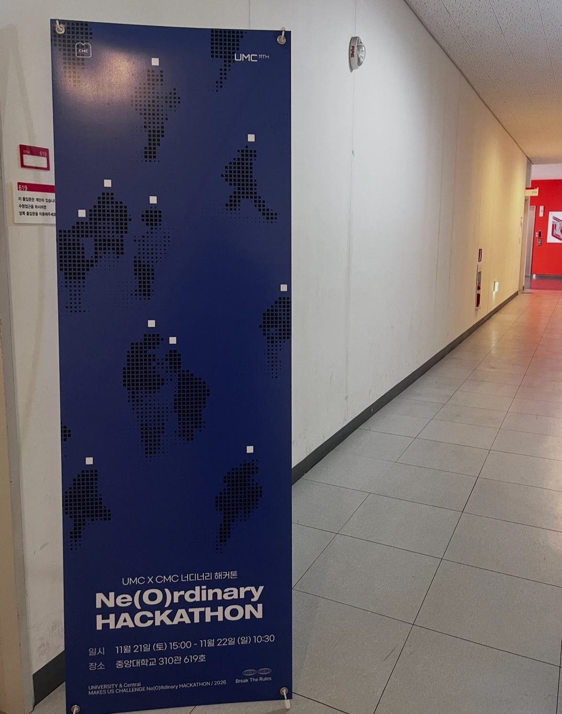
1. 대회 소개
“11th NE(O)RDINARY HACKATHON”은 CMC와 UMC가 함께 참여하여 진행하는 해커톤 행사이다. CMC의 경우 현재 기수는 필수 참여이고, UMC는 전 기수를 대상으로 신청 모집을 받으며 현재 활동하는 기수가 아니면 5,000원의 참가비가 있었다. (필자는 7th이기 때문에 참가비를 지불했다…)
CMC의 경우 경쟁률도 높고 현직자들의 비율이 높기 때문에, UMC 출신인 나로서는 굉장히 많은 배움을 얻을 수 있는 기회였다.
대회는 2026년 11월 21일 ~ 11월 22일 무박 2일 동안 진행되었고, 장소는 중앙대학교로 접근하기 좋은 위치에 있었다.
사전 자료로는 11th Ne(o)rdinary Hackathon(새 탭에서 열림) 사이트에 대회 타임 테이블, 파트별 가이드, 유의사항, 심사 기준이 공개되었다.
대회가 시작하기 직전 팀이 공개되었고, 한 팀을 제외한 모든 팀이 PM, Design, Front, Server 총 7명으로 구성된 8팀이 공개되었다.
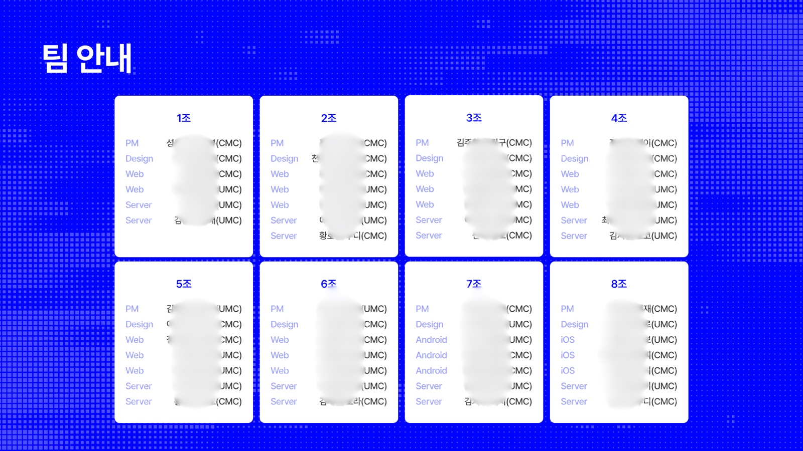
2. 주제 공개
집합 장소에 모여 팀원들과 인사를 나누고, 시작 직전 형식적인 간단한 소개와 유의사항들을 들은 뒤에 주제가 공개되었다. 공개되었는데 응?
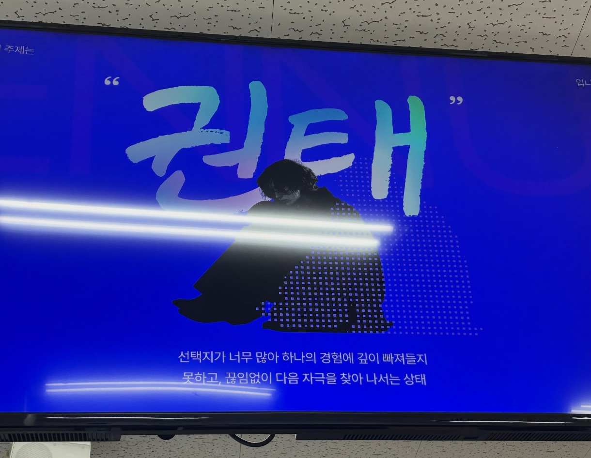
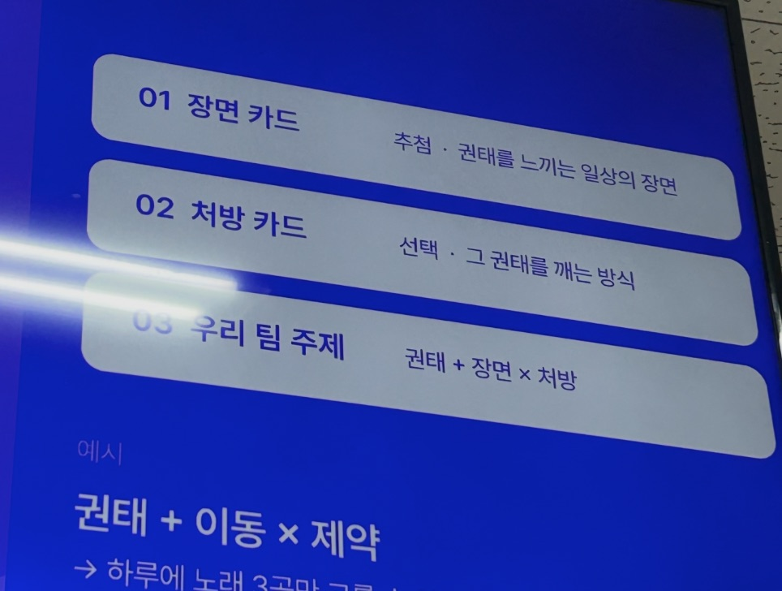
주제가 다름 아닌 “권태”였다. 정말 상상치도 못한 주제를 보고 생각이 멈추려는 찰나에, 권태에 장면 카드와 처방 카드를 합친 팀 각각의 주제로 확정된다는 얘기를 들었다.
설명을 하자면 8장의 장면 카드 중 뽑기를 통해 팀마다 하나씩의 카드가 주어지고, 8장의 처방 카드 중에 팀원과 상의하여 하나를 선택하는 방식이었다…. (이게 무슨,,,, 정말 예상치 못했다.)
우리 팀은 최종적으로 “권태 + 집 X 덜어내기” 주제가 확정되었다. 주제 자체는 어려웠지만 권태라는 주제만 같고 장면, 처방 주제는 다른 팀들과 모두 달라 서비스가 겹치는 일이 없다는 생각에 안도감이 들었다.
3. 아이디어 선정
“권태 + 집 X 덜어내기”에 관한 아이디어는 비교적 빠르게 나왔다. PM님 주도 아래에 팀원들은 브레인스토밍을 진행했고 2가지의 최종 후보를 도출했다.
(분명 그랬는데…. 하나가 기억이…)
결론적으로는 주거 공간을 공유하는 사람들 간의 서비스로, 지친 일상에서의 일 뒤에 집으로 돌아왔을 때 권태에 빠져들지 않기 위해 서로의 감정을 공유하고 짐을 덜어 가는 서비스로 방향을 확정 지었다.
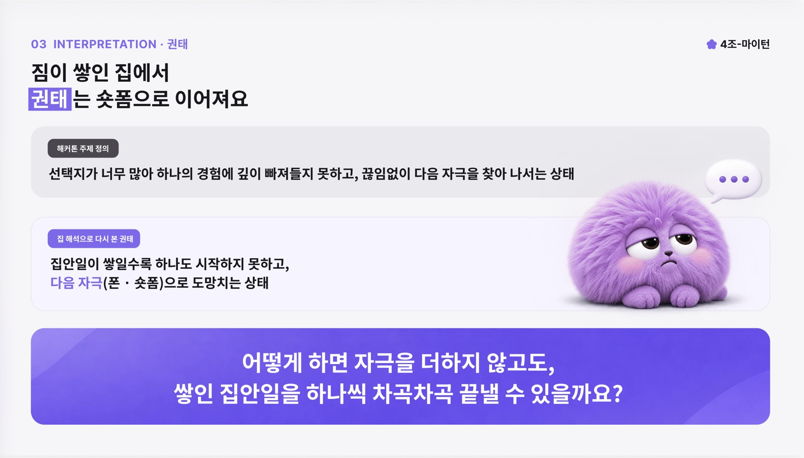
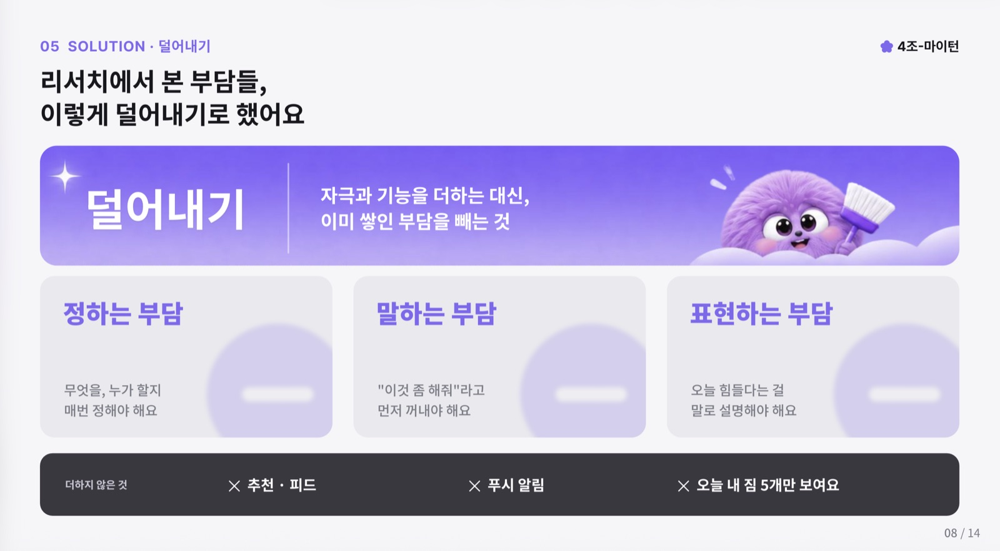
4. 개발 과정
Server는 나를 포함해 2명이었다. 역할 분담의 경우 토큰이 나보다 함께한 팀원분이 더 많아서 코드 구현은 팀원분이, 인프라는 내가 하기로 했다. 초반에 하네스를 통해 Claude가 어떤 걸 할지 명확하게 문서화하고 구현하는 과정은 팀원과 함께 진행하였다.
AWS는 내가 했지만 할 때마다 늘 알 것 같으면서도 모르는 느낌이 들어, 시간을 투자해 공부를 제대로 해야겠다는 생각이 뼈저리게 들었다. 설명을 하자면 EC2를 사용해 SSM으로 외부에서 연결될 수 있게 설정했고, RDS 하나와 S3 bucket 하나로 구성했다.
 원본 크기로 보기(새 탭에서 열림)
원본 크기로 보기(새 탭에서 열림)심사 기준에 보안 관련 항목이 있어서 최대한 생각하면서 하려고 노력했다.
그 이후 ERD와 API 명세서를 Claude가 초안으로 작성하고 팀원 둘이 하나하나 다 검토했다.
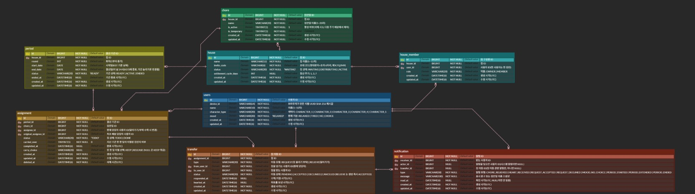
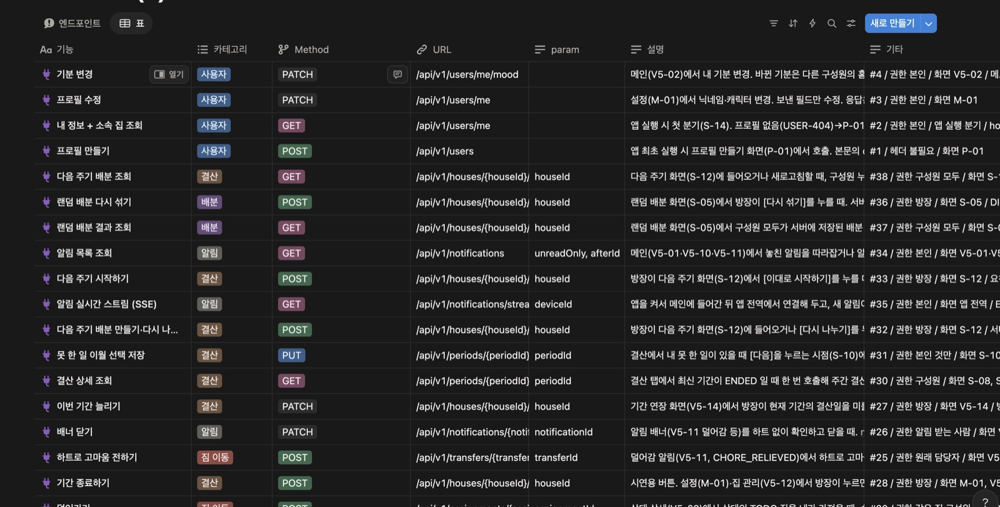
테이블은 7개, API는 36개가 나왔다.
API 구현 이후에는 모든 시간을 QA하는 데 집중했다. 프론트 파트와 소통하며 추가로 필요한 기능을 구현했고, QA도 tool을 사용해 자동화시켜 다양한 시각에서 테스트를 했다. (이때 tool과 스킬의 중요성을 다시 한번 체감했다.)
5. 결과물과 발표
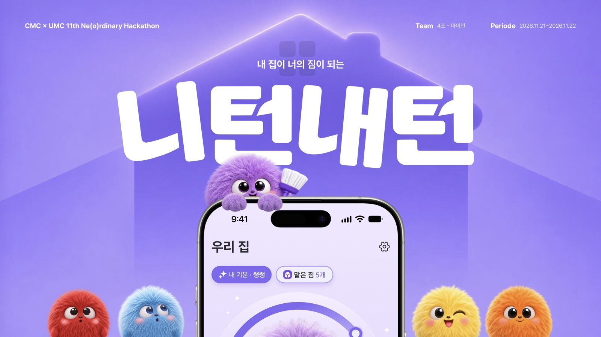
최종 결과물이다! 정상 작동하며 PM님의 멋진 발표가 끝나자마자 눈이 감겼다…..
그래도 이 악물며 8팀의 발표를 모두 들어 보니, 주제를 풀어 나가는 다양한 방식이 굉장히 흥미로웠다. 내가 미처 생각해 보지 못한 방식으로 주제를 풀어낸 팀들을 보면서 자극도 많이 받았다.
발표를 보는 내내 한편으로는 조마조마했다. 발표도 중요했지만, 우리가 제출한 코드도 심사 대상이었기 때문이다. 서버 개발을 맡았던 터라 자연스럽게 내가 짠 코드가 신경 쓰였다.
결과는?
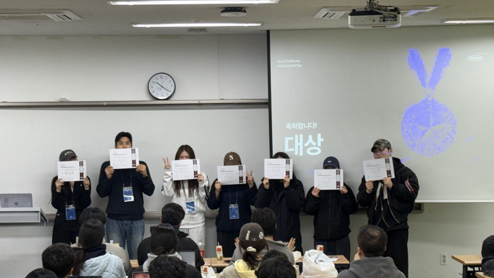
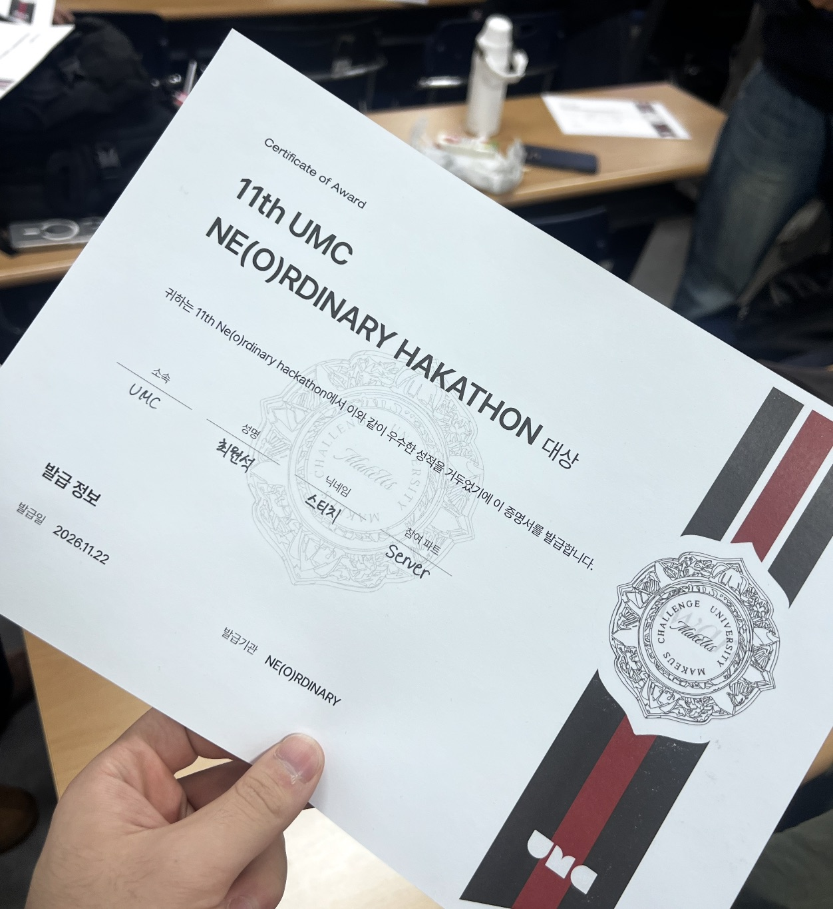
대상이었다!
6. 회고
군대를 가기 전과 이후로 개발 업계에 너무 많은 변화가 있었고 크게 체감하고 있다. (분명 Codex 이런 거 없었음.)
현재 최신 코딩 트렌드를 빠르게 익히기 위해서는 다른 사람들과 만나 소통하고 공유하는 해커톤만큼 좋은 게 없다고 생각했다.
그래서 최근 대회를 많이 나갔었지만, 수상은 단 한 번도 하지 못했다.
왜일까?
백엔드를 구성하면서 해커톤 기간 내에 구축할 수 있는 기능은 한계가 확실하게 정해져 있다고 생각한다. (해커톤 서비스에 과부하 테스트 해 봤자 어디다 쓸 건데.) 그럼에도 차이는 분명히 존재한다.
이번 해커톤을 돌아보면 크게 두 가지가 남았다.
1. 소통과 표현의 중요성
AI 덕분에 개발 경험이 없어도 아이디어를 구현해 볼 수 있는 시대가 됐다. 그래도 결과물을 보면 차이가 느껴진다. 같은 기능을 부탁하더라도, 내가 무엇을 만들고 싶은지 구체적으로 설명할 수 있을 때 결과물이 의도에 더 가까워졌다. AI가 어떤 맥락을 알아야 제대로 작업할 수 있는지 이해하는 것도 중요했다.
팀원과 소통할 때도 비슷했다. 내가 해결하려는 문제를 충분히 이해하고 있어야, 왜 이 기능이 필요한지와 어디까지 구현해야 하는지를 팀원에게 설명할 수 있다. 서로 같은 그림을 그리고 있는지 확인하는 일이 결국 팀 전체의 결과물을 만드는 과정이라는 걸 느꼈다.
2. AI를 어디까지 맡길지 판단하는 능력
예전에는 Codex나 Claude Code가 원하는 결과를 내놓지 않으면 ‘AI가 아직 멍청하네’ 하고 넘어가곤 했다. 이번에는 결과가 어긋났을 때 내가 어떤 맥락을 줬고, 일을 어디까지 맡겼는지부터 돌아보게 됐다. 같은 도구를 써도 내가 어떻게 굴리느냐에 따라 결과가 꽤 달라졌다.
구현을 맡기는 것만큼이나 어디까지 맡기고, 어디서부터 내가 직접 판단하고 검증할지 정하는 일이 중요했다. 작업에 필요한 정보와 도구를 챙겨 주는 것도 내 몫이었다. 앞으로는 AI를 쓰면서 이런 판단을 더 잘해 살아남기를 기도해야겠다.